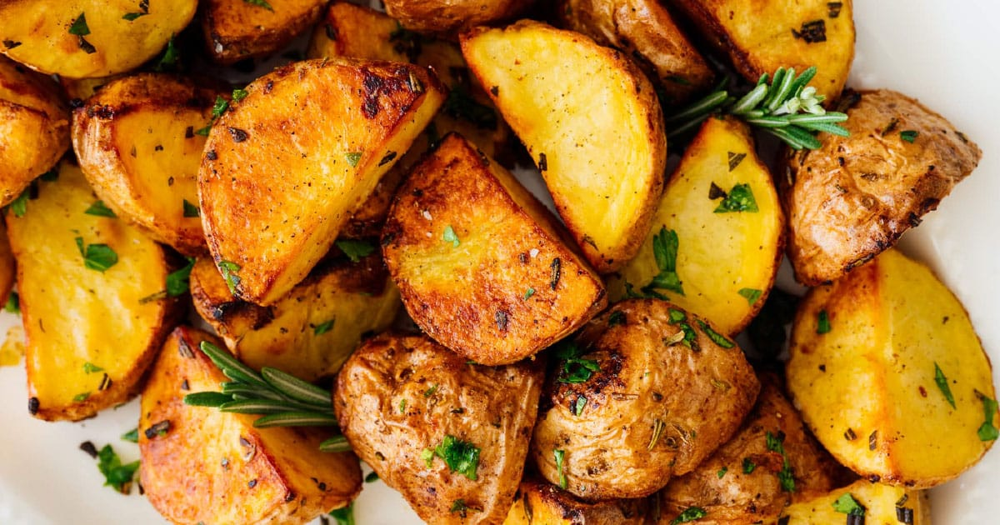

Baby Potatos with Rosemary

Description
Delicious tiny oven-baked potatos that are easy and quick to make. The main seasoning is rosemary, but you can choose to add many different spices and condiments
Ingredients
- Baby potatoes or any potato chopped in small cubes
- Rosemary
- Salt
- Pepper
- Olive Oil
Steps
- Pre-heat the oven at 290°C for 5 minutes
- Spread the potatoes on the tray over aluminum foil
- Salt the potatoes adn spray some olive oil over them
- Add rosemary and pepper
- Let it cook for 30 minutes and check if they are soft
- It may need more 5 or 10 minutes inside the oven depending on your equipment
- Enjoy!